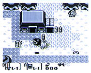
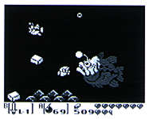
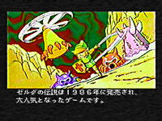

|
■「ゼル伝」のGAME BOY版が登場！ |
|
  |
■『ゼルダの伝説 夢をみる島』 ゲームボーイ用 1993年６月６日発売 3,800円（税別） ■トップビューの画面構成、敵との戦闘、ダンジョンの探索など、ゲームシステムはそのまんま『ゼルダの伝説』。スケールダウンをみじんも感じることなく、本格的なアクションロールプレイングを堪能できるという、衝撃のゲームボーイ用ソフトがコレだ。 ■ただし、ストーリー展開が従来の作品と大きく異なっていて興味をひく。ゲームボーイ版では、シリーズではじめてハイラルを飛び出し、舞台は南の小さな島。主人公はもちろんリンクだが、ゼルダ姫を助けるために冒険するワケでも、ガノンと対決するワケでもない。ガノンとの戦いのあと、リンクの乗った船が沈没し、この島に打ち上げられたという設定なのだ。剣をなくしたことに気付いたリンクは、とりあえず島を冒険することに……。 ■“夢”がキーワードとなった物語は、せつなくて涙をさそう内容。だが、つりぼりゲームやマリオ（？）の登場など、コミカルでとびっきり明るい面も併せ持っている。 |
|
■全国のユーザーが熱中、リアルタイム衛星放送バージョン！！ |
|
 |
■『ゼルダの伝説』 サテラビュー用 1995年放送 ■サテラビューは、衛星放送でスーパーファミコン用ゲームを受信して楽しむシステムだ。新作のお試し版や『平成 新・鬼ヶ島』に代表されるオリジナル作品など、バラエティに富んだタイトルが受信可能で、『ゼルダの伝説』もそのひとつだった。 ■基本的にはシリーズ１作目。しかし、衛星放送を利用してのイベントは、独特のものだ。全ユーザーが午後６時にチャンネルを合わせ、リアルタイムで送られてくるデータと音声番組とを受信してゲームを進める。番組ではドラマが放送され、その内容にあわせて“６時12分に妖精が現われるので○×へ向かえ”というような展開になったりする。全国で同時に何人ものユーザーがイベントに参加しているという、連帯感がたまらなかった。 ■最終的には、制限時間内に迷宮をどこまでクリアできたかを競う。プレイヤーは進行状況を表わすパスワードを取って応募、成績優秀者には賞品が贈られた。 |
| Page-1 | ■ | 1986年『ゼルダの伝説』ディスクシステム、ファミコン用 |
| Page-2 | ■ | 1987年『リンクの冒険』ディスクシステム用 1991年『ゼルダの伝説 神々のトライフォース』スーパーファミコン用 |
| Page-3 | ■ | 1993年『ゼルダの伝説 夢をみる島』ゲームボーイ用 1995年『ゼルダの伝説』サテラビュー用 |